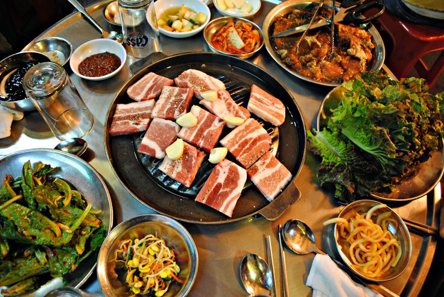
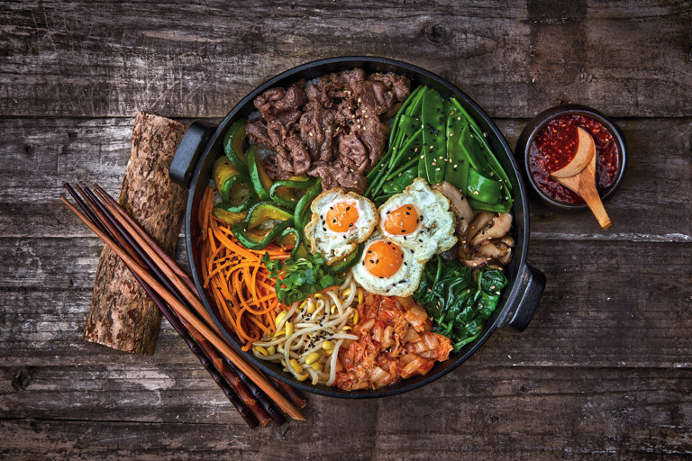
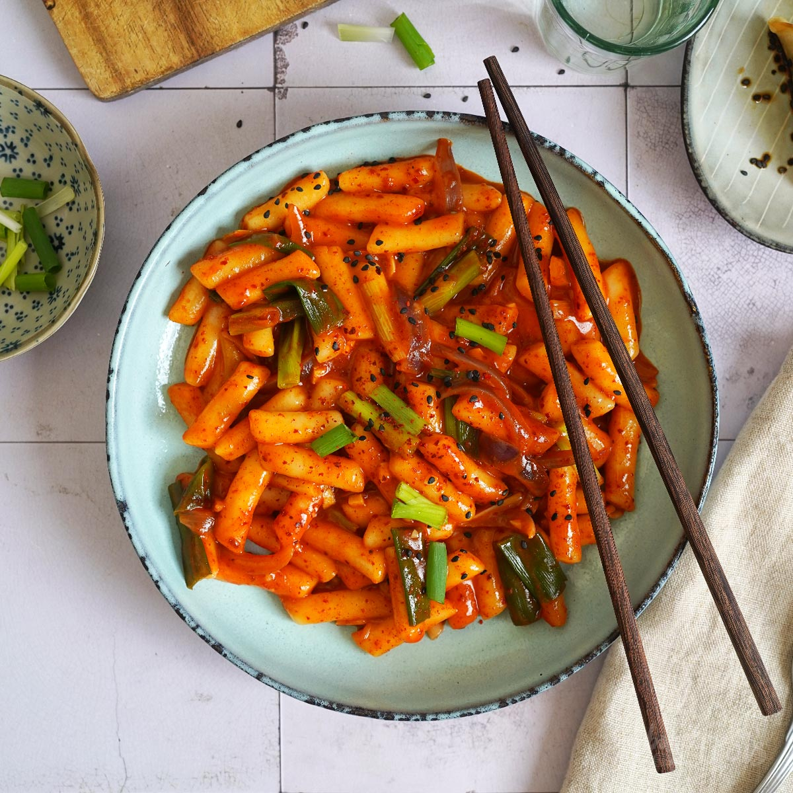
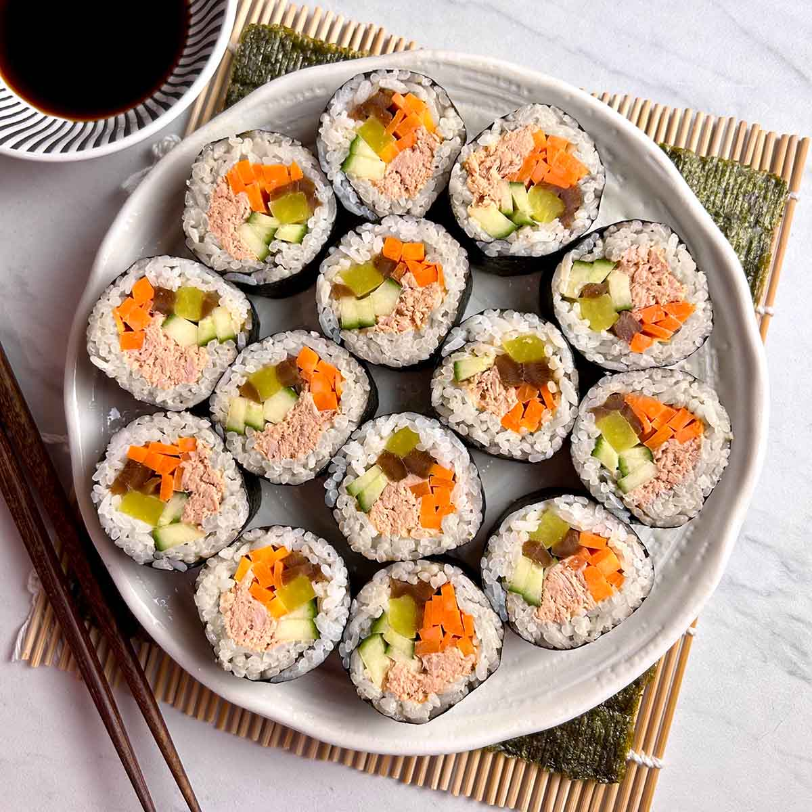
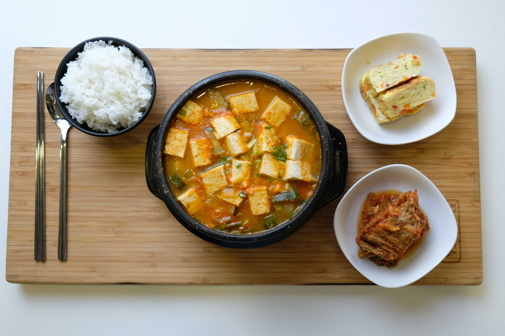

Platos Tradicionales

Sam Gyeob Sal (삼겹살)
Este plato tipico es el alma de la barbacoa coreana: un festín de panceta de cerdo de "tres capas"
que se cocina directamente en tu mesa hasta alcanzar una perfección dorada y crujiente.
Este plato sensacional proviene de las decadas de 1960-1970.
Los ingredientes principales:
- Carne de cerdo
- Lechuga
- Arroz Blanco
- Kimchi

Bibimbap (비빔밥)
Esta maravilla es el arcoíris de la cocina coreana, que es como un festín visual que significa literalmente "arroz mezclado".
Es un plato que celebra la armonía y el equilibrio en cada bocado.
Esta joya proviene de las decadas de 1392-1897.
Los ingredientes principales:
- Carne (cualquier tipo)
- Vegetales (zanaoria, setas, raizes y rabano coreano)
- Arroz Blanco
- Gochujang (pasta tipica de corea)
- Huevo (crudo en el centro)

Tteokbokki (떡볶이)
es la esencia misma del "comfort food" coreano: un festín de cilindros de pastel de arroz
masticables y suaves bañados en una salsa roja intensa, espesa y adictivamente picante y dulce
Este manjar proviene del año 1953 pero se popularizo entre 1970 y 1980.
Los ingredientes principales:
- Garaetteok (Pasteles de arroz)
- Eomuk (Pasteles de pescado)
- Caldo de Anchoas y Algas (Dashi)
- Salsas tipicas como (Gochujang, Gochugaru)
- Salsa de soja y ajo
- Endulzantes (azucar, miel o jarabe de arroz)

Kimbap (김밥)
Este famoso plato es el compañero inseparable de la cultura de Corea un rollo
vibrante y lleno de color que encapsula la tradicion y el cariño del hogar.
el cual tiene un parecido a su pariente el sushi.
Este clasico plato proviene de las decadas de 1910-1945 pero se cree que existe incluso antes del siglo XIX.
Los ingredientes principales:
- Gim (Alga)
- Danmuji (Nabo encurtido)
- Arroz Blanco
- Vegetales (Zanahoria, espinacas y pepino o raíces)
- Eomuk (tiras de pastel de pescado)
- Salsa de soja como dip

Doenjang-jjigae (된장찌개)
Dicho icono historico es mucho más que un simple estofado. Este es el alma reconfortante de Corea en un caldo.
donde su sabor profundo y puro invita a pausar y recordar
las cosas buenas de la vida. Este, al igual que su base fermentada, requieren tiempo y
paciencia para alcanzar su máxima plenitud.
Este plato historico proviene de los años 57 a.C.-668 d.C.
Los ingredientes principales:
- Doenjang (Pasta de soja fermentada)
- Caldo de Anchoas y Alga Kelp
- Gochugaru
- Tofu
- Carne o Mariscos
- Vegetales (calabazin, papas, cebolla, hongos, cebolleta y chile verde)